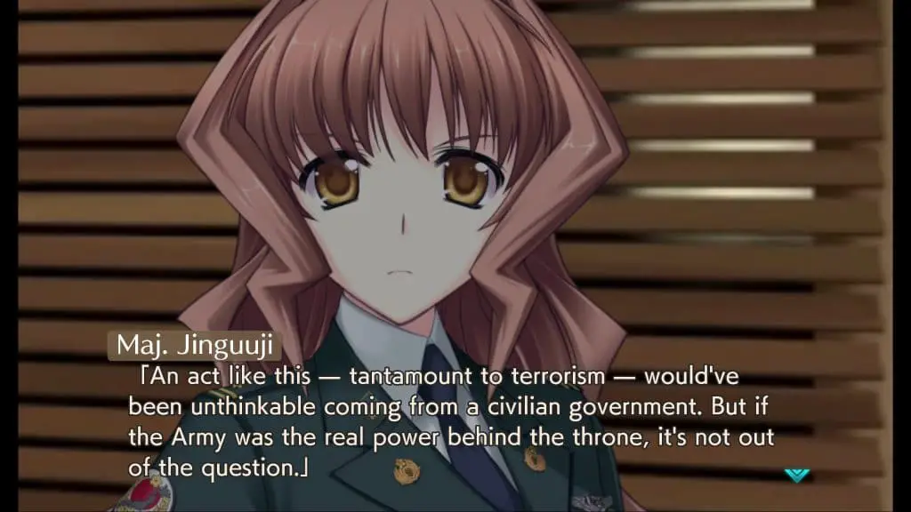
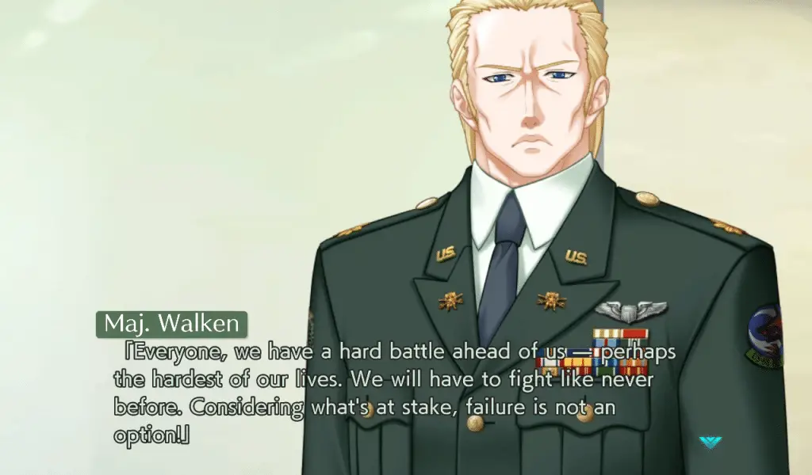
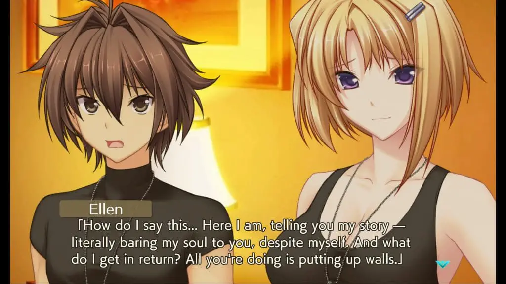
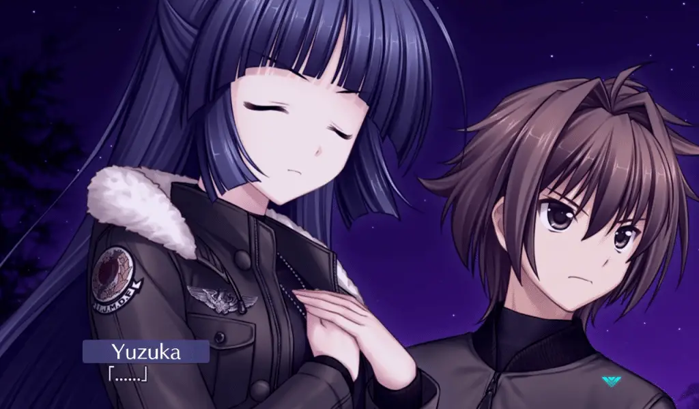

War is a cruel mistress, always leaving devastating results and showing up when it’s least wanted. You know, when shit’s gone down. Muv-Luv Unlimited: The Day After 03 happens to be exactly that scenario; even in the post-apocalypse, we can’t escape war. The Day After 03 is probably how one expected The Day After to go down, having intense drama and wrapping up major parts of the story, but it doesn’t wrap the story up.
My Muv-Luv Unlimited: The Day After impressions will assume that you have played through at least the original Muv-Luv (the Extra and Unlimited arcs) since there are inherent spoilers that cannot be avoided. So please play those first or read our review on them before you continue with this one. If you want thoughts on the release structure and the new engine, please read or watch our The Day After 00 impressions or the review of the series.

The Day After 03 begins with tensions high then eventually bursting. Despite Hibiki’s best efforts to end the war, the war machine marches forward. Muv-Luv has an interesting relationship with war: while always being a military story, we’ve never actually seen war because the enemy was always the BETA. Given that humans have been on the losing side against BETA, they did not have time to wage war against each other. That said, the post-BETA era was speculated, and war was always on the horizon. Alternative V comes as a result of the Americans trying to force that post-BETA reality.
So, when conflicts are on the rise in Muv-Luv, it’s a special thing. While leading to disastrous results, war pushes people to the limits and provides some of the most interesting storytelling available. The narrative even spends time tying up loose ends from the main trilogy. Sure, we didn’t really experience the 12/5 coup in Unlimited, but that doesn’t mean that those factions just went away, so it was nice to see them make a return. There’s just one problem here – it’s total insanity and can easily break your suspension of disbelief or make the story seem more cartoonish than it actually is. In a way, The Day After 03 is great for doing this – it’s dropped any pretenses or normalcy, and in a mad world, you expect mad people.

However, this entire scenario ends up feeling more like fanservice rather than an actual war. You can’t keep on escalating in such an aggressive fashion and not lose someone in the process. Also, as someone living in America in 2021, having a war started by a radical nationalist party feels a touch too close to home for my liking.
This is ultimately a minor complaint as the story still manages to be absolutely riveting regardless of my comment on it going over-the-top. The themes in The Day After lead to some of the coolest moments in the series and were incredibly engaging.

When The Day After 03 eventually does come back down to earth, it finishes up Hibiki’s personal story for the most part, which is riveting in execution. Sure, the big reveal wasn’t actually a reveal because so much of it was foreshadowed, but it was still satisfying to finally see and hear after much speculation. There are many great character moments in The Day After 03, and the depth of the cast is at a climax. Ellen, in particular, had amazing moments, which had me loving The Day After that much more. This story is the conclusion for Hibiki, and experiencing that is incredibly engaging.
Because The Day After 03 starts with the tension so high, it can’t really ramp it back up in the end, which makes the events feel far more muted than the rest. This isn’t bad per se, and the action was compelling, but it did feel hollow after more questions arose than answers. The Day After 03 isn’t the end: along with Muv-Luv INTEGRATE, Muv-Luv fans also have The Day After 04/Resonate to look forward to, and hopefully with more backstabbing and despair to come. There was tons of political foreshadowing here, and the conflict about the power struggles in the Japanese government seemingly will go all out in the next chapter. Given that The Day After 00 through The Day After 03 was released all at once, having to wait for The Day After 04 is incredibly jarring and is honestly the most irritating part of the game.

The Day After 03 has some of the best moments in the series.
Not only is there a war, but the game has some absolutely amazing character
moments that wrapped up Hibiki’s personal story in a satisfying way. I’m
left really liking The Day After 03 overall. Still, a few
things about 03 rubbed me the wrong way, the over-escalation of the
war and the unfortunate cliffhanger thanks to the nature of the release in
particular. Still recommended and still some of the best Muv-Luv, but
it leaves The Day After 01 as the best in the series, in my opinion,
which wasn’t something I was expecting to say.